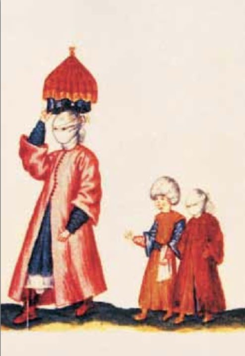
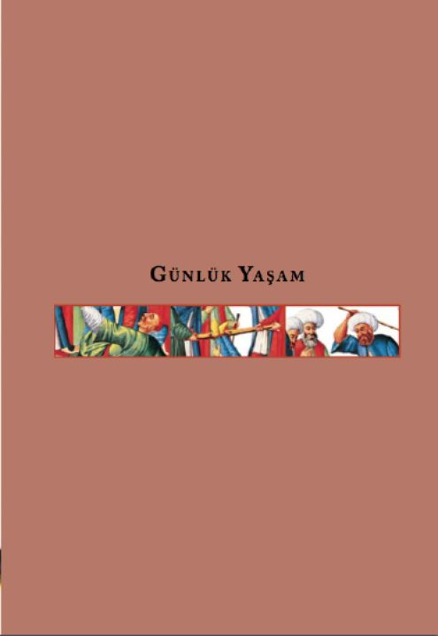
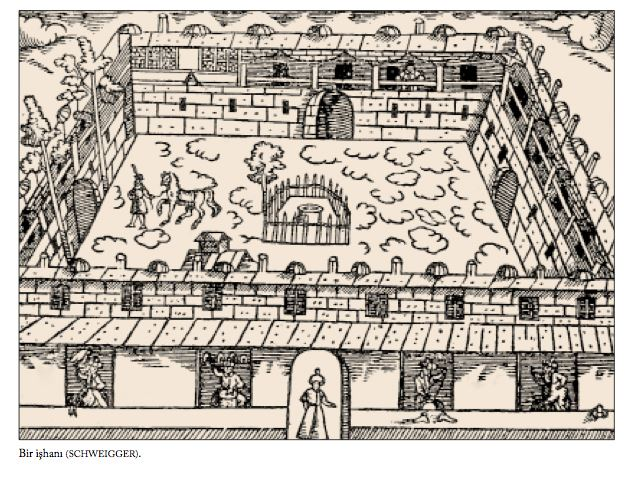
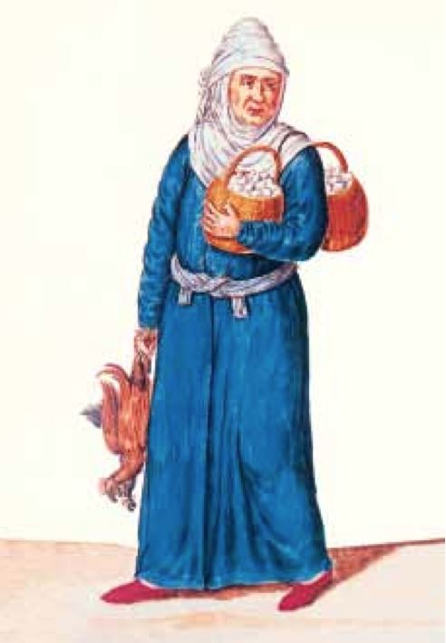
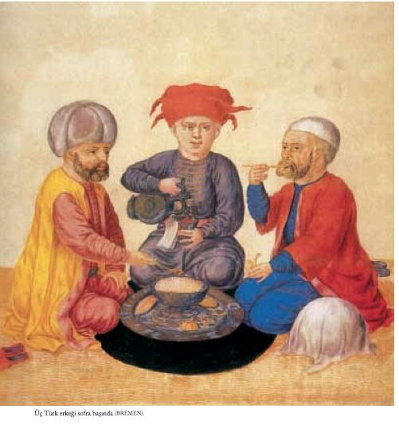
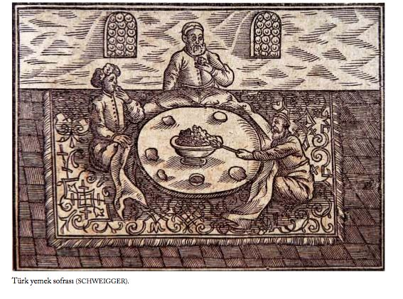
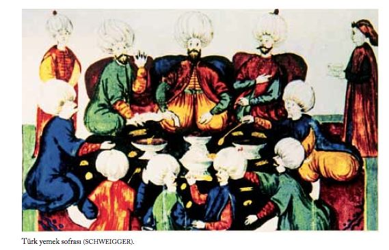
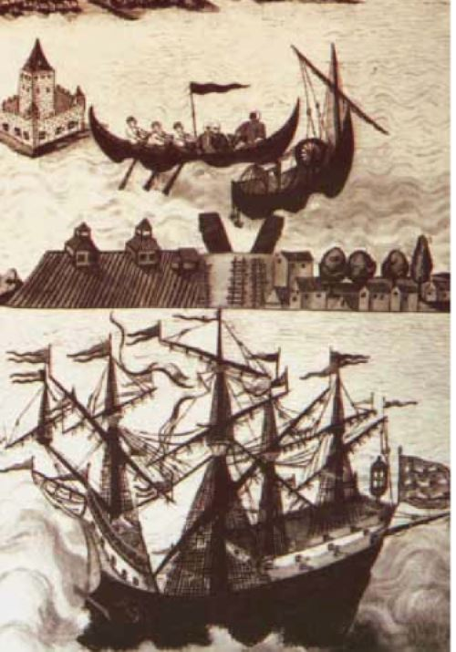

GÜNLÜK YAŞAM



Fiyat Listeleri, Para Birimleri, Ölçüler
Fiyatları en ayrıntılı veren Hans Dernschwam olmuştur. Kendisi eli sıkı biri olduğundan aldatılmamak için şarap alırken kendi ölçü kabıyla bir kez de kontrol ediyordu.
1 koyun: 22-24 akçe; 1 piliç: 4 akçe; 1 tavuk: 5-6 akçe; dışardan gelen 1 okka hayvan yağı: 6 akçe, 1 okka bal: 4.5 akçe, 1 okka en iyi bal: 5-6 akçe; 1 okka beyaz bal: 10-12 akçe; 1 okka balmumu: 12 akçe; 1 okka rafine balmumu: 16 akçe; 1 okka şeker: 17 akçe; 1 okka ince beyaz toz şeker: 18-20 akçe; 1 okka karabiber: 45 akçe; 1 dirhem en iyi cins safran (yaklaşık 3 gram): 2 akçe; 150 dirhem Transilvanya ’dan getirtilen kaya tuzu: 1 akçe; 1 kile iyi cins beyaz deniz ya da göl tuzu: 12 akçe; 1 kile gri tuz: 9-10 akçe; 1 kile pirinç: 10-12 akçe; 2 somun ekmek: 1 akçe (bu fiyat, ekmek bir önceki günden kalmış ise, 3 ekmek için ucuzlatılırdı); 4-5 okka kuru soğan: 1 akçe; tartılarak satılan bir bidon sirkenin 2 okkası: 2 akçe; bir at yükü odun (3 kantar): 7 akçe idi [DERNSCHWAM 46-49].
1 kile Viyana meczen ’inden biraz daha az, 1 bushel ya da yaklaşık 34 litre kadardı. 1 çuval beş kile alır, bir beygire 2 çuval pirinç yüklenebilir, bir adam merdivenlerden ancak 1 çuval çıkarabilirdi. 1 okka 400 dirhem ya da 110 Macar kilosu ederdi. Tenekeden bir kantarın Lemburg ’daki fiyatı 28 florin ’di. 1 Polonya florini 45 akçe ettiğine göre, bir teneke kantarın İstanbul ’daki fiyatı, taşıma ve gümrük dışında, 1.260 akçe idi [DERNSCHWAM 143].
Genellikle iyi bir tavuğun fiyatı 6 akçeydi. Büyük bir tavuk ya da kısırlaştırılmış bir hindi 9-10 akçe civarındaydı. Tavuklar mısırla beslendiklerinden etleri lezzetli değildi [DERNSCHWAM 126]. Pedro da tavuk fiyatlarına bile değinerek, yolunmuş, temizlenmiş besili bir tavuğun bir riyal ’e, iğdiş edilmiş bir horozun ise bir buçuk riyale satıldığını söyler [VIAJE 271].
Şarap tartıyla satıldığından fiyatında hile yapılamazdı. 1 kile şarap 2 okka gelirdi. 1 metra şarap 4 kileye eşitti. Kendi metal kabıyla ölçen Dernschwam 1 kilenin 6 Viyana seydel ’ine eşit olduğunu söyler [DERNSCHWAM 47]. Şarap, İstanbul ’da 2 okka ya da 2.5 Macaristan kilosu veya 6 Viyana seydel ’ine (sıvı ağırlığı ölçü birimi) eşit ağırlıkta kaplar içinde de satılırdı.
1 Klunder 1 metra ’ya eşitti [DERNSCHWAM 101]. 14 metra su; 4 kile. 1 kile arpa: 4-5 akçe; 1 kile kırmızı şarap: 3-4 akçe; adalardan getirtilen 1 kile Malvasia şarabı: 3 akçe; Midilli Adası’ndan getirtilen 1 kile muskat şarabı: 4-5 akçe; kırmızı şaraba kıyasla daha az bulunan şarap, kırmızı şarabın iki misli pahalıydı. Bir erkek kölenin fiyatı ise 1.000 akçeydi [DERNSCHWAM 140].
Bassano ’ya göre Türkler genellikle, ne İtalyan scudo ’sunu ne de İspanyol doblico ’sunu kabul ediyorlardı. Bu yüzden bu paraları akçeye değiştirmek gerekli oluyordu. Akçe İtalyan baiocco ’sundan biraz büyük madenî bir paraydı. Kalp olanına çok rastlandığından insanlar eski ya da zedelenmiş akçe kabul etmiyorlardı. 4 akçe 1 carlino, 50 akçe 1 altın scudo, 60 akçe 1 düka ve 1000 akçe 20 altın scudo ediyordu [BASSANO 15, 42, 92].
Çeşitli fiyatlara gelince; Bassano ’nun yazdığına göre Haliç ’te İstanbul ’dan Pera ’ya kayıkla geçmek kayıkçı başına (1 ya da 2 kayıkçı olurdu) 1 akçeydi [BASSANO 15]. Hamamda ödenen para 1-4 akçe arasında değişiyordu. Kadınların hamam giysisi 6-8 akçe arasındaydı [BASSANO 15, 18]. Sünnet törenlerinden önce davetlilerin çocuğun babasına akçe ya da carlino vermesi âdetti. Böylece baba bu parayı tören için yapılacak hazırlıklara harcıyordu [BASSANO 83]. At pazarında atları kaydedip gösteren adama 4 akçe veya 1 carlino ödenirdi [BASSANO 92]. Bir koyun budunun fiyatı 1 carlino ’nun altındaydı [BASSANO 76]. Türkiye ’de yaşayan Hıristiyan erkeklerden yılda 1 scudo alınıyordu [BASSANO 109]. Müslüman olmayı reddeden tutsaklar esir olarak kalıyorlar ve Galata ’daki hapishanede tutuluyorlar, günde 1 akçe alıyorlardı [BASSANO 90].

Tahta geçen Sultan’ın bastırdığı altın para, Macar düka altını ayarında olup, buna Sultanon denirdi. Afrika ’nın Berberi kıyılarında Hıristiyanlar arasında kullanılan düka altınını ise Türkler ülkelerinde hemen hemen hiç kullanmazlardı. Bu yirmi üç karatlık Berberî, düka altını üç İngiliz Penny ’si ağırlığında ve dokuz gümüş shiling ve dört penny değerindeydi. Oysa, Venedik altını zechine gümüş Venedik parası ile İspanya ’nın dört ve sekiz riyal ’lik gümüş paraları ise Türkiye ’de, neredeyse Türk parasından bile fazla kullanılırdı. Venedik yönetiminde olan Yunan adaları Zante ve Girit ’te bir altın zechine 11 Venedik lirası, Kıbrıs ’ta 11 Venedik lirası ya da 120 Türk akçesi ederken İstanbul ’da bir altın zechine 125 Türk akçesi, bir Fransız kuronu 100 akçe, bir Alman doları 75 akçe idi. İstanbul ’daki tüm ticaret, başka altın ve gümüş paralar da kullanılmasına karşın, akçe üzerinden hesaplanırdı. Küçük işlerde, akçeler kese içinde sayma sorunu olmasın diye tartıyla verilir, çok daha büyük işlerde ise eşek yüküyle hesaplanırdı [MORYSON 158-161].
O dönemde beş shilling olan bir İngiliz lirası 70-80 akçe ettiğine göre, bir akçe de yaklaşık üç çeyrek penny edermiş [MORYSON II, 71].
İstanbul ’da genel ulaşım, Boğaziçi ve Haliç ’te, irili ufaklı kayıklarla yapılırdı. İskeleler, kayık fiyatları, kayıklara kaç kişinin bineceği zaman zaman değişen Dîvân kararlarıyla belirlenirdi. Örneğin, 1564 ’te çıkarılan bir karar Üsküdar ’a gidip gelen kayıklarla [AR 69] ilgiliydi. Eyüp Sultan ’ın kayık trafiğiyle ilgili bir başka karara göre [AR 145-146], altı kürekli kayıklar 5 akçe, dört kürekli kayıklar 4 akçe, iki kürekli kayıklar 3 akçe alacak, dolu kayığa binildiğinde ise yalnızca yarım akçe verilecekti. Yemiş-Kâğıthâne arası 10 ile 15 akçe arasında değişirdi. Muhtesip Çardağı ve Unkapanı ’ndan Sütlüce ’ye 3 akçe, Hasköy ’e ise kürek sayısına göre yarım akçe ile 6 akçe arası verilirdi. Başka yörelere gidiş fiyatları da etraflıca belirtilmişti. Dîvân kararlarından, tüm iskeleler de adlarıyla izlenebilir: Muhtesip Çardağı, Eyüp Sultan, Yemiş, Kâğıthâne, Kasımpaşa, Yağ Kapanı, Balıkpazarı, Galata, Fındıklı, Tophane vb.
İstanbul ’da Bulunan Besin Maddeleri
İstanbul ’da çok çeşitli sebze bulmak olasıydı. Ama bezelye ve turp yoktu. Lahana çok boldu. Türkler lahanayı yalnızca turşu olarak yiyorlardı. Patlıcanın turşusu da yapılıyordu, dolması da. İki çeşit havuç vardı: biri altın sarısı, diğeri kiremit kırmızısı. Maydanoz boldu, Avrupa ’dakiler gibi lezzetli değildi. Pancarın genellikle salatası yapılıyordu. Hardal tohumu, dövülüp koyun etine lezzet katsın diye kullanılırdı [DERNSCHWAM 128].
Hayvansal yağlar İstanbul ’a Tataristan ’ın Kefe kentinden gemiyle gelirdi. Bu arada çuvalların içindeki yağlar sıcak havada gevşer, erimeye yüz tutarsa tayfalar çuvalları hemen geminin dışına bağlayarak yağların soğuk suyun etkisiyle tekrar sertleşmesini sağlardı. Acımış, iğrenç bir kokusu olan bu yağlar, inek, koyun, manda ve at sütünün hepsinin karışımından yapılırdı. Türkiye ’de iyi meralar, dolayısıyla saman az olduğu için pek fazla inek de yoktu. Bu yüzden Türkler pek fazla tereyağı yapmazlar; oysa, çok süt içer, bolca yoğurt, beyaz peynir yerlerdi. Yahudiler ise, kendileri için özel olarak yaptıkları süt kuzusunun yağını yerlerdi.
Türkler, her öğünde fırından taze çıkmış beyaz ekmek yediklerinden, fırınlar her gün çalışırdı. Fırınlar yağlı ekmek ve çeşitli hamur işlerini de çıkarırlardı. Venediklilerin yaptığı küçük tip ekmekler ise, yalnızca Galata ’da yapılırdı. Bu tip ekmek, bir arada dört tane küçük ekmekten yapılır, üzerine de haç biçiminde bir çizik atılırdı. Bunların tanesi 1 akçeydi.
Pirinç, çoğunlukla İskenderun Limanı’na Mısır ’dan gelirdi. Türkiye ’de yulaf bulunmaz; Türkler genellikle atlarına tahıl yerine sadece geceleri az miktarda ot verirlerdi [DERNSCHWAM 46-49].
Türkler çeşitli kavun yetiştiriyorlardı. Bunlar ağırlıkları tartılarak satılırdı ve ucuzdu. Özellikle karpuz çok seviliyordu, çünkü çok suluydu. Bir tür kavun asılarak bahara dek saklanabiliyordu. Kış boyu balkabağı bulunabiliyordu [DERNSCHWAM 127].
Bassano, Türklerin yeme alışkanlıkları üzerine verdiği ayrıntılı bilgiler arasında onların yemeklerinin basit olmasının nedenini Türklerin yemeği tat almaktan çok gereksinim için yemelerine bağlıyor. Türk yemeklerinin tadının güzel olmasına karşın, Avrupalıya yavan geldiğini belirtiyor. Et için Türkler av hayvanlarını yeğliyorlardı. Keçi, koyun, kuzu ve sığır eti de yerlerdi. Nadiren süt danası eti yerlerdi, çünkü buzağının yenmesinin ineğin sütten kesilmesine neden olacağına inanırlardı. Ateşte pişmiş kuzu ve keçi şişi severler, güveçlerine ve öteki yemeklerine dövülmüş sarmısak koyarlardı. Pirinçle yapılmış etli çorba da severlerdi. Paket halinde satılan pişmiş yiyecek bulunduran birçok dükkân vardı. Buralardan Türklerin çok sevdiği kelle, paça ve çift satılan katı yumurta alınabilirdi. Çoğunlukla ekmekleri kötü kaliteli büyük somunlar halindeydi. Haşhaş, kimyon ve başka şeyler de katılırdı. Ekmekler kötü öğütülmüş undan yapılırdı. Ancak bir de daha iyi kalite bir ekmek vardı. Uzun olarak pişirilen bu ekmeğe biraz beyaz un ve tereyağı eklenir, üstüne yumurta sürülürdü, piştiğinde kabuğu kızarsın diye [BASSANO 35a-36b].
Pedro, ekmeğin, etin ve meyvenin İstanbul ’da çok bol bulunduğunu yazar. İki okkalık bir somun ekmeğin fiyatı yarım akçe, incecik beyaz undan yapılan bembeyaz bir başka çeşit ekmeğin fiyatı da yarım akçedir. En iyi cins koyun etinin iki yüz dirhemi için bir akçe yeterlidir. Pedro canlı hayvan satın almanın kesilmiş hayvan almaktan daha kârlı olduğunu, besili bir koyunun yarım dükaya alındığını, koyunların yaklaşık on okka çektiğini, bunun beşte birini de kuyruğun oluşturduğunu söyler. Kuru incir, kuru üzüm, badem, ceviz, fındık, kestane gibi kuru yemişler ile kiraz, elma, erik, kavun gibi meyvelerin de çok bol olduğundan söz eder [VIAJE 268-69].

Moryson, Türklerin, bütün kış yedikleri üzüm, kayısı, kavun, balkabağı gibi ürünlerin yanısıra başka birçok meyve yetiştirdiklerini; sıcak havalarda bunlardan bazılarından yapılan soğuk şerbetlerin sağlığa zararlı olmayıp çok şifalı olduğunu söyler. Moryson, ateşli hasta olduğu bir gün, bu meyvelerden yapılan soğuk bir şerbetin zararlı olabileceğini sanmasına karşın içer; oysa, soğuk şerbet hastalığına zarar vermediği gibi, ateşini bile düşürür [MORYSON 127].
Yakın yerleşim bölgelerinden kente çok sayıda meyve gelirdi. Ancak Avrupa ’daki gibi iyi ve lezzetli değildi çünkü olmamışken toplanıyordu. İyi elma bulmak çok zordu. Çok çeşitli erik ve kiraz vardı. İlk çıkan, büyük kirazlar çok pahalı olur, mevsim ilerledikçe ucuzlardı. İstanbul ’a gemiyle çok sayıda ekşi ve tatlı portakal, limon, diğer turunçgiller, nar ve incir getirilirdi. İtalya ’dan fıçılar içinde limon suyu geliyordu. Bursa ’dan okkası dört akçeye kestane gelirdi. Başka yerlerden gelen kestane küçük olurdu. Fıçılar içinde zeytinyağı, susamyağı gemilerle Galata ’ya gönderilirdi. Yahudiler susamyağını çok kullanırlardı [DERNSCHWAM 126].
Her sonbaharda üzüm bolluğu olurdu. Çoğunlukla hemen yenirse de bir kısmı kış için saklanırdı. Ayrıca üzüm suyundan pekmez denilen tatlı bir şurup yapılırdı. Üzümler yemeklik olarak kurutulurdu. Ama Dernschwam küçük İzmir üzümü görmemiş [DERNSCHWAM 124&126].
İstanbul’a İskenderun ’dan deniz yoluyla büyük miktarda hurma getiriliyordu. Şeftali çok boldu. Şeftalinin sarı olan bir cinsi vardı ve tanesi 1 akçeden satılıyordu. Çeşitli birçok küçük meyve vardı. Bunlardan biri deniz kıyısında bulunan yamaçlardaki çalılarda yetişen çileğe benzer bir meyveydi. Bir diğeri hünnap ağacının meyvesiydi. Bu, kış için kurutulur ve bir tür içecek yapmak için kaynatılırdı. Bir başka içecek de olgun vişneleri kaynatarak elde edilirdi [DERNSCHWAM 128].
Busbecq ’e göre Türkler yemeye alıştıkları pirincin büyük yararını görüyorlardı. Ulaşımda kullandıkları devenin de öyle. Pirinç besleyiciydi ve çok kişiyi doyurmak için az pirinç yeterliydi. Develer ise az yiyip çok ağır yükleri taşıyabiliyorlardı. Atlara göre de fazla bakım istemiyorlardı. Busbecq develerin nasıl eğitilip üzerlerine yük konulmasına izin verdiklerini görmüş. Ancak yükleri çok ağır olduğunda ayağa kalkmayı reddederlermiş. Yemek yerken bir daire oluşturup çömelirler, yemeğin kötü veya az olmasına aldırmazlarmış. Saman yoksa severek böğürtlen çalısı ya da diken çiğnerlermiş [BUSBECQ 108].
Mutfak, Yemek ve Sofra Âdetleri
Bu dönemde Türkiye ’ye gelen tüm Avrupalı gezginler gibi Nicholay da Türk mutfağını inceliksiz ve yalın bulmuş; ne salça çeşidi ne de süsleme zevki varmış. Türkler genellikle koyun eti, keçi ya da dana yiyorlardı. Bunları kızartıyor ya da haşlıyorlardı. Lezzet katmak için kullandıkları tek şey sarmısaktı. Çok az dana eti yiyorlardı. Çünkü danası yanından alınırsa ineğin sütten kesileceğine inanıyorlardı. Tavukları, Nicholay ’ın Fransa ’da yedikleri kadar lezzetliydi. Koyun paçası çok fazla lüks sayılıyordu. Bunlar dükkânlarda hazır pişmiş satılıyordu. Kıyma da hazır satılıyordu. Türk tarzında et pişirmek için madenî bir kaba kömür koru konuyor ve bunun üzerine bir ızgara yerleştiriliyordu. Daha sonra da et bunun üzerine konulup deliklerden gelen ateş üzerinde kızartılıyordu. Etle beraber badem ve tereyağıyla pişirilmiş lezzetli pilâv yeniyordu [NICHOLAY 90b].
Türkler, baharatlarla tavşan, geyik, yabanî tavşan ve benzeri av etlerini pişirmeyi bilmezlerdi ama değişik biçimlerde tavuk pişirirlerdi. Hafif ateşte haşlanmış tavuğu keser, pirinç çorbasına katar, yenmeden az önce buna, maydanoz veya tarçın koyarlardı. Kızarmış tavuğu soğanla doldururlardı. Kireç ocağı gibi kubbeli büyük fırınlarda kızartılmış tavuk satan birçok dükkân vardı. Bu fırınların bir ya da iki gözü bulunuyordu. Korlaşmış ateşin ısısı alttaki deliklerden yukarıya ulaşırdı. Et ya da tavuk kapaklı çömleklere konur, böylece kendi buharıyla pişerdi. Genellikle bu kapların yanına, tepsinin üzerinde ekmek hamuru da konur ve yemekle ekmek aynı anda pişmiş olurdu [DERNSCHWAM 124].
Türkler koyun etini yeğlerlerdi. Parası olan hemen hemen her yemekte koyun eti yerdi. Her gün peynir yenirdi. Fakir olanlar, neredeyse yalnız yeşil sebze, fasulye ve mercimekle yaşarlardı. Sığır eti sevilmezdi ve İstanbul ’da zor bulunurdu. Bulunduğunda ise bu, ölümü yaklaşmış yaşlı sığırların eti olurdu [DERNSCHWAM 124].

Dernschwam ’ın beğenisini kazanan tek Türk yemek türü tatlılar olmuştu. Bu tatlılar, muhallebi, pirinç, süt, un, şeker ve yağda yapılır, üzerine ya gülsuyu ya da başka kokulu şeyler dökülürdü. Başka bir tatlıyı yapmak için, bir kaşık dolusu çırpılmış yumurtayla un karışımı, kızgın madenî bir kaba konurdu. Bu karışım pişerken gözleme gibi yayılırdı. Sonra kalın bir gülsulu şeker tabakasıyla sıvanır, üzerine badem ya da ceviz konur, üst üste birkaç kat oluşurdu [DERNSCHWAM 124].
Busbecq, Türklerin yemek konusunda azla yetindiklerine tanık olmuş. Yalnızca ekmek, tuz, sarmısak, soğan ve yoğurtları varsa bunları yakınmadan yerlerdi. Susadıklarında bu yoğurdu soğuk suyla sulandırıp içine biraz ekmek doğrayarak içerlerdi. Bu içecek yalnızca çok iyi bir susuzluk giderici değil, aynı zamanda hazmettirici ve lezzetliydi. Yolculukta, Türkler sıcak yemeğe ya da ete gereksinim duymazlardı. Öğünlerini çoğunlukla peynir ve suda kaynatılmış çeşitli meyveler oluştururdu. Bunlar büyük toprak tepsilere konur, isteyen istediğini alırdı. Meyvelerin sularına ekmek banılır, sonra da kalan meyve suyu içilirdi. Bu yiyeceklere o kadar az para harcarlardı ki Busbecq, kendi vatandaşlarının yiyeceğe bir günde harcadığını bir Türk ’ün on iki günde harcayacağını belirtiyor. Resmî yemeklerde bile yalnızca koyun etli ya da tavuklu pilâv verilir, arkasından tatlılar ve şekerlemeler ikram edilirdi. Türkler horoz bilmez, sülün ve ardıç kuşu gibi küçük kuşları da yemezlerdi. Yemek sırasında, şekerli ya da ballı su içerlerdi. Bu onlar için lezzetli bir içkiydi [BUSBECQ 52-53].
Pedro, Türkler ’in yiyeceklerinin başında, et ve tavuk suyuna yapılan çorbayı (sorbas, tauc sorbas), koyun etinin suyuna yağ katılarak yapılan pirinç pilâvını (pilao), bol soğanla pişirilen koyun etini, dereotlu nohut yemeğini, ıspanak, biber gibi sebzelerle yapılan yemekleri, ince hamurun arasına kıyma döşenerek yapılan böreği; tatlılardan da sütle yapılıp tavuğun göğsünün dövülerek içine konduğu tavuk göğsünü, “sarı pirinçle” yapılan zerdeyle bademli erik hoşafını sayar. O dönemde İspanyolların henüz tanımadığı havyarın da İstanbul ’da çok bol bulunduğunu, özellikle Rumların bunu içki içerken yemeyi sevdiklerini, tüm bir ev halkına yetecek kadar havyarın yalnızca bir akçeye alınabildiğini yazar [VIAJE 254-57].
Kabak ve patlıcan, sarmısak, baharat ve tuzla iyice harmanlanmış koyun etiyle doldurulur ve sade suda pişirilirdi. Havuç da aynı biçimde doldurulurdu. Bu tür yemek genellikle üzerine yoğurt dökülerek yenirdi. Asma yaprağı içinde kıyma ile sarılır ve altına ekşi erik konarak suda pişirilirdi [DERNSCHWAM 12].
Poğaça denilen çok lezzetli küçük börekler bir parmak kalınlığında yuvarlanmış tuzsuz hamurdan yapılıyordu. Toprak çömleğin içine korlaşmış mangal kömürü konurdu, bunların üzerine de poğaçalar. Daha sonra çömleğin çevresine ve kapağın üstüne de kor halinde kömür konurdu. Böylece poğaçalar on beş dakikadan az bir zaman içinde pişerdi. Sıcak poğaçaları satmadan önce ekmekçi kömür bulaşmış yerleri bıçakla kesip atardı [DERNSCHWAM 128].
Fırına konmadan önce, genellikle ekmeğin üzerine susam ya da siyah çörek otu tohumu konurdu veya ekmeğe susam yağı sürülürdü. Simit denilen ekmekler üzerine beyaz haşhaş tohumu konurdu [DERNSCHWAM 128].
Her yerde pişirildiği gibi ekmek ayrıca hamur yoğrulup korlaşmış madenî bir kap üzerinde ya da çömlek içinde de pişiriliyordu. Dernschwam, Türklerin ekmeği her zaman taze yemek istemelerini garip buluyor. Bu nedenle ekmek günlük bile olsa fırıncılar bir ekmek parasına iki ya da üç ekmek satarlardı [DERNSCHWAM 125].

Yönetici sınıftan olan varsıl Türkler iyi besleniyordu. Ancak orta ve alt sınıf genellikle çok basit yiyecekler yiyorlardı, çünkü yemek pişirme sanatından habersizdiler. Baş yemekleri çorbaydı. Hem sabah kahvaltısında hem öteki öğünlerde çorba içiyorlardı. Çorba genellikle et suyuna pirinç, kimi zaman da bulgurdan yapılırdı. İçine karabiber, sirke ve limon suyu katılırdı. Suyu kaynatılarak çorbada kullanılan koyun eti dikkatlice parçalara ayrılır, soğanla karıştırılır ve fırınlanırdı. Yanında yemek için yapılan pilâv önce suda kaynatılır, sonra yağla pişirilirdi. Yenmeden önce pilâvın üzerine kızarmış badem konurdu. Yemekten sonra meyve yenirdi [DERNSCHWAM 123].
Âşûre, zeytinyağlı yemekler ya da kıyma, un, yumurta ve peynirle yapılan kaygana gibi yemekler zaten çok çeşitli şeylerden yapıldığından, sofrada başlı başına sunulabilirdi [ÂLİ 164-165].
Sayıları en azından 4.000 olan Yeniçeriler e yiyecek İstanbul ’dan geliyordu. Bunların çok azı et yiyordu. Busbecq ’e, şalgam, soğan, sarmısak, yabanî havuç ve salatalığın tuz ve sirkeyle karışımını tahta bir tabaktan zevkle yiyen bir Yeniçeri göstermişler. Bu adamlar sudan başka bir şey içmezlermiş. Bu basit yemek hem keseye hem sağlığa yararlıymış [BUSBECQ 150-151].

Fynes Moryson ’un izlenimlerine göre, en varlıklı Türkler bile yemeklerini lüks ve gösterişten uzak, çökmüş terziler gibi sinilerin önünde diz çökerek ya da dere kenarında veya bahçede yerlerdi. Sofralarını oluşturan siniler öylesine alçaktı ki; yerde oturarak rahatça yemeklerini yiyebilirlerdi. Yemekten sonra ellerini masa örtüsüne veya yerdeki çimenlere silerlerdi. Gezide olan Türkler yiyeceklerini, sarı ya da bordo renkli deriden yapılıp iple bağlanmış çanta gibi bir çıkında gezdirir, bunu yayıp yemeklerini üzerinde yerlerdi. Türkler, bıçak kullanmayıp elle yedikleri için eti çok güzel pişirirlerdi. Sofralarında genellikle yalnızca tek çeşit yemek olurdu. Sofraya hep birlikte oturur, kısa bir duadan sonra, sessizce ve çabukça yemeklerini yerlerdi. Sofrada (domuz olmamak koşuluyla) bolca et bulunmasına karşın pek balık yemezlerdi. Türk mısırını genellikle İngiliz mısırından daha büyük taneli ve daha lezzetli bulur Moryson. Yine Moryson ’a göre Türklerin yemek pişirme sanatında pek üstün oldukları söylenemezdi. En zenginleri bile sade suya pilâvla yetindiğine göre, aylarca süren savaşlarda büyük orduları besleyebilmelerine pek o kadar şaşmamak gerek der, Moryson [MORYSON 125-126].
Yine Moryson ’a göre Türklerin ev eşyası pek fazla olmayıp eski bir tencere, tahta bir kaşık, tahta veya deriden bir su kabı, bir şilte, bir yorgan, bir kerevet ve üzerinde yemek yemek için bir sini yeterliydi. Mutfakta aşçılara, bulaşıkçılara da pek gereksinim yoktu. Türkler, ekmek yerine pide, yemek yerine de çoğunlukla peynir ve yoğurt yerlerdi. Tavuk ve dana eti de pilâvla birlikte yenir, pirinç etin suyunda pişerdi. Yüksek sınıftan kimseler bile yemeklerini tencereden yer, ayrı kap kullanmazlardı. Moryson, Türklerin yediği geyik ve keçi etinin yanı sıra Suriye ve diğer komşu ülkelerden gelen koyunun da çok iyi besili, büyük ve yağlı olup kuyruğunun on beş kilo geldiğini de ayrıca belirtir [MORYSON 126-127].
İstanbul ’da birçok tatlıcı vardı. Bunlar her tür tatlı yapıyorlardı. Bu tatlılardan ikisini Dernschwam çok sevmişti. Birisi badem, yumurta beyazı ve balla yapılıyordu, ötekiyse sertmiş gibi görünen ama ağızda eriyen helvaydı [DERNSCHWAM 125].